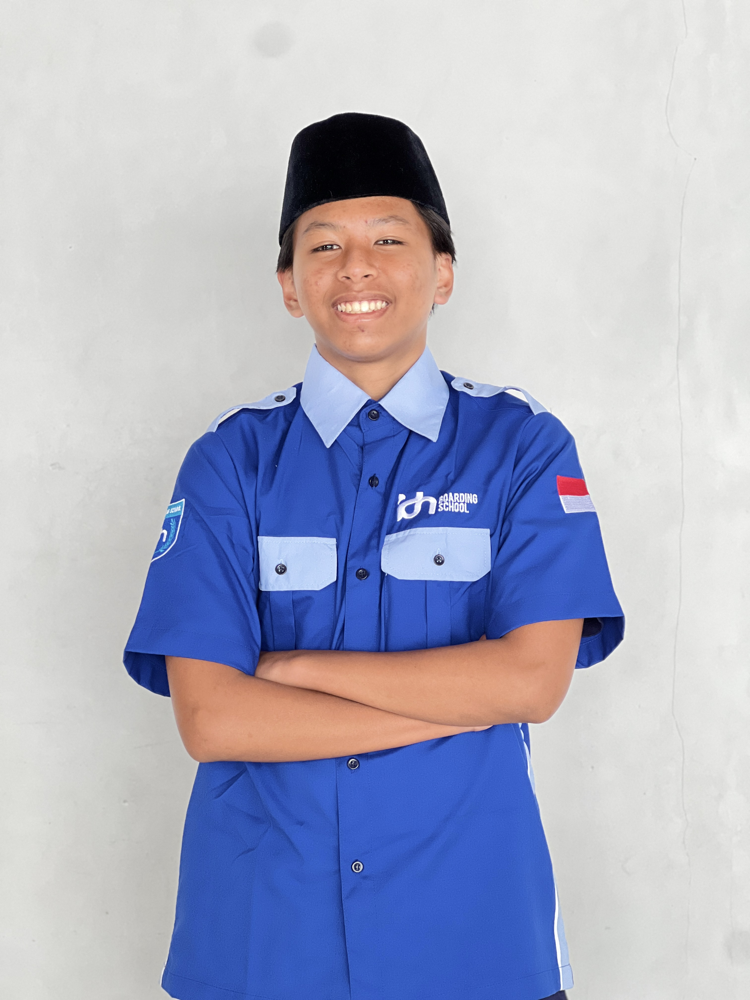

Cari buku yang kamu inginkan dengan lebih
Telusuri katalog buku dari Open Library berdasarkan judul, penulis, atau topik. Lihat detailnya, lalu baca selengkapnya di sumber resmi.

Apa Itu KlikBaca?
Tak kenal maka tak sayang, kenalan dulu yuk dengan platform kami.

KlikBaca adalah website katalog buku yang memudahkan siapa saja menelusuri bacaan berdasarkan judul, penulis, atau topik sebelum membacanya.
Platform ini dapat diakses dari mana saja melalui ponsel maupun komputer, tanpa mengharuskan pengguna menginstal aplikasi tambahan.
Fitur utama untuk pengalaman membaca lebih baik.
Kami menyajikan katalog yang rapi dan mudah diakses kapan saja untuk mendukung pencarian referensi buku kamu.
Lihat layanan ›Pencarian Cepat
Cari buku berdasarkan judul, nama penulis, atau topik dalam hitungan detik dengan hasil yang relevan.
Katalog Terbuka
Data terhubung langsung dengan Open Library untuk menyajikan jutaan koleksi bacaan dari seluruh dunia.
Detail & Sampul
Kenali visual sampul, tahun terbit, dan sinopsis buku secara jelas sebelum kamu memutuskan membacanya.
Tautan Sumber Resmi
Buka halaman buku di Open Library langsung dari halaman detail untuk membaca atau meminjam versi digitalnya.
Bagaimana Cara Kerjanya
KlikBaca dibuat untuk satu hal: membantu siapa saja menemukan buku yang dicari, lalu tahu ke mana harus membacanya.
Kami percaya mencari buku seharusnya tidak rumit. Ketik judul, penulis, atau topik, dan katalog langsung menampilkan hasilnya.
Supaya kamu bisa mengenali sebuah buku lebih dulu—lewat sampul, penulis, dan sinopsisnya—sebelum memutuskan membacanya.
Data buku dan sampulnya diambil langsung dari Open Library, katalog terbuka yang memuat jutaan judul dari seluruh dunia.
Hasil pencarian menampilkan sampul, penulis, dan tahun terbit. Klik sampulnya untuk melihat sinopsis dan detail lain, lalu pilih Baca selengkapnya untuk membuka halaman buku di Open Library.
Cari buku, lihat detailnya, lalu lanjutkan membaca di Open Library.
Katalog ini bisa dipakai di ponsel maupun komputer, dengan tampilan sederhana supaya kamu langsung menemukan buku yang dicari.
KlikBaca adalah katalog pencarian, bukan perpustakaan fisik. Tidak semua buku bisa dibaca penuh di Open Library: sebagian hanya menampilkan informasi metadata, dan sebagian lain dapat dipinjam secara digital.
Kami terus menyempurnakan KlikBaca, merapikan tampilan dan memperjelas informasi supaya pencarian semakin nyaman.
Katalog buku
Temukan buku yang kamu butuhkan.
Cari judul
Ketik judul, nama penulis, atau topik, dan temukan buku yang kamu cari dalam hitungan detik.
Cari penulis
Ketik nama penulis favoritmu di kolom pencarian dan lihat daftar karya-karyanya.
Lihat detail buku
Klik sampul untuk melihat sinopsis, tahun terbit, dan informasi lengkap lainnya.
Baca selengkapnya
Dari halaman detail, buka Open Library untuk membaca atau meminjam versi digitalnya bila tersedia.
Buku Terpopuler
Buku yang sedang ramai di Open Library minggu ini. Klik sampul untuk melihat detailnya.
Apa yang Mereka Katakan
Mencari buku di sini terasa mudah. Katalognya jelas, dan halaman detailnya gampang dipahami.
Memakai KlikBaca tidak rumit. Cukup cari judulnya, lihat detailnya, lalu lanjut membaca di Open Library.
Tampilannya rapi dan cepat dibuka. Hasil pencarian langsung menampilkan sampul buku, jadi mudah mengenali buku yang dicari.
Desainnya bersih dan mudah dibaca. Menu dan kolom pencariannya sederhana, jadi tidak perlu bingung mencari ke mana-mana.
Sebagai murid SMK, saya terbantu dengan katalog dan sampul bukunya. Pelajar bisa mencari bacaan sendiri dengan mudah.
Informasi buku tersaji dengan jelas: sampul, penulis, dan sinopsis. Ini memudahkan santri dan guru mengenali buku sebelum membacanya.
Situs ini mengajak siapa saja untuk lebih dekat dengan buku. Mencari bacaan jadi mudah, dan bagian FAQ menjawab hal-hal yang sering ditanyakan.
Pertanyaan Umum
Jawaban singkat seputar penggunaan katalog KlikBaca.
Bagaimana cara mencari buku di katalog?
Ketik judul, nama penulis, atau topik di kolom pencarian, lalu tekan Enter. Katalog akan menampilkan daftar buku beserta sampul, penulis, dan tahun terbitnya.
Dari mana data buku di katalog ini berasal?
Data buku dan sampulnya diambil dari Open Library, sumber terbuka yang memuat jutaan judul dari seluruh dunia. Katalog ini membantu kamu mengenali sebuah buku sebelum memutuskan membacanya.
Apakah buku di katalog ini tersedia di rak perpustakaan tertentu?
Tidak otomatis. KlikBaca bukan katalog satu perpustakaan fisik, melainkan menampilkan data dari Open Library. Untuk memastikan ketersediaan buku di perpustakaan tertentu, tanyakan langsung ke petugasnya.
Bisakah membaca bukunya langsung di situs ini?
Belum bisa. KlikBaca menampilkan informasi buku seperti judul, penulis, sampul, dan sinopsis. Untuk membacanya, pilih Baca selengkapnya di halaman detail untuk membuka Open Library. Sebagian buku di sana bisa dibaca atau dipinjam secara digital.


Ahza Kamil Waldan Abbasy
Memudahkan siapa saja menemukan buku yang dicari
Halo 👋 ʕ•ᴥ•ʔ
Aku pendiri KlikBaca, katalog untuk mencari buku berdasarkan judul, penulis, atau topik.
Tujuan aku membuat website KlikBaca adalah membantu menumbuhkan minat baca, khususnya di kalangan anak muda, lewat pencarian buku yang lebih mudah dan praktis.
Website ini dikembangkan menggunakan HTML, CSS, dan JavaScript.
Punya saran atau menemukan bagian yang kurang pas? Kirim pesan kepadaku, aku menerima segala kritik yang membangun.